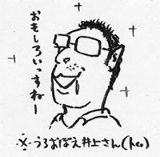
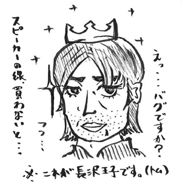
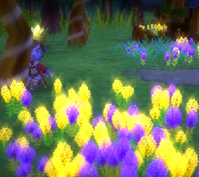

皆様、お初にお目にかかります。
ハレて発売決定されました王様物語☆ムービー部の、
白組：牧野有美と申します。
いや～～国内発売、本気（と書いてマジ）待ち望んでましたー！
制作関係者がこんだけ待ち遠しく焦れていたので、ファンの皆様も
ひとしきり焦れっぱなしでいらした事でしょう、そうでしょう。
ほんと決まって祝！ですね！Wiiも買いましたよ～！
とシンパシーを一方的に感じております。
私、実はCM・PV・映画等のアニメーション制作を常にしておりまして、
今回の様な楽しいゲームのムービー全般に渡るディレクションに
関わるのはお初でした。ゲームの一部分の製作はあったりもしましたが、
企画も汲んでがっぷり監督さんと面つき合わせてと云うのは
実に初体験でしたね～～。
しかも、常は2Dアニメを基としておりますので「え？！3Dキャラじゃん！
私でイイのんですか？！」と最初はこっそり及び腰な手描きアニメーター
だったんですぅ。そう！ほんとの最初の最初は、手伝い的な事から
始まったのでした。
それは、2007ゲームショー用PVのハウザーの
3Dキャラが間に合わないので、２Dアニメでやってくれ！と、
弊社の井上プロデューサーに無茶振りされた馴れ初めでした。
前々から井上は、 私がゲーム好きでしかもmoonの超～大ファン！なのを
知ってまして。そこにつけこま、、、いえ、組み込まれたんですね。

※この人が井上さん 白組の敏腕プロデューサー！？それにしても、普通あり得ない展開で。
全く同じには到底不可能と読んだので、
せめて流れを止めず自然に同居出来るキャラアニメにするべく、
色調・テクスチャーを社内2D＆3D両スタッフと共に
試行錯誤し、さ、色はOK！お次ぎは動画！！と、
コンテに合わせ原画を描く段階で、難関に遭いました。
当時点でハウザーのムービー用完成モデリングが無い！！
と云う事は、
顔の3D詳細データは何も無い！
2D画のキャラクターデザイン画と、
パッケージ画のイイ感じから推測するのみで、
見上げのハウザーの顔、あんなに凹凸の激しい顔！
を3Dな感じでアニメしなければならなかったのです。
苦行でした～。
練り消しゴムでハウザーの顔を作って傾けてみたりしたのです
が、はたしてこれでキャラ合っているのか？！
と自分が信じられぬまま作画を進めざるを得なかったです。
そのアニメチェックで初めて木村さんの演出を直に受けました。
プロポーションの些細な直し等はさておき、やはりこの監督さんは
何か違うぞ？！と感じたのは、その明確なこだわりでした。
私の拙い表現で表しますと「面白さ」の追求がハンパ無い。
それも木村さんオリジナルフレーバーで。具体例として、先ほどの
ハウザーが初めて登場して名乗る場面で
「ひげも動かそう！語気に合わせて伸び縮みしよう！」
ということになり、「ハウザー・オレガノシュタイン！」（ピキーン！）
と口ひげ両方を伸ばしてみたところ、「片方だけに」とのこと！
普通（？）のアニメに慣れていた身には斬新な演出でした。
なんで？！？と思いつつもやってみた結果、訳の分からない面白さに！
 ※このヒゲが伸び縮み するのですじゃ（ハウザー談）
※このヒゲが伸び縮み するのですじゃ（ハウザー談）
この調子で、全てのムービーに木村さんのフレーバー充満の
面白ムービーが揃ったと自負しております。
ちなみに、当時の苦労を買ってくれてか、カットされて無ければ
その場面のハウザーは２Dのアニメのまま使って頂けているそうです。
その後3Dハウザーの顔のモデリングもじっくり凝りました。
なかなかのダンディに仕上がっていると思ってます。
木村さんの指示は独特で熱いものでしたが、同年代のカルチャー体験が
幸いし、非常にピン！と来るディスカッションは、深夜に及んでも最後
には納得の脳内爽快感を伴う疲労困憊となった思い出です。
しかし小物の設定にまでも徹底したシナリオは
濃～い世界観に練り上げられ、
やりきったら必ず面白いものに成る！と、
監督の筋金入りのファンだったからこその信心で
スタッフを鼓舞し、皆もその珍味を味わいつつ大いに尽力してくれました。
ゲームムービーは皆様一度だけしかご覧にならないかもしれませんが、
プレイされたときはどうか、画面の隅々迄目をこらしてやって下さい。
メインのキャラの動きのこだわりの他にも、ゲーム内容には不必要なくらい
草にてんとう虫が這っていたり、木にトカゲが登ったり、
リスが顔を出したりしています。
個人的には、随所に垣間見れる70年代的演出も楽しかったですな～。
若いゲーマーの方達にも共有出来る
普遍的楽しさとなっていると思います。
もし意味が分からなかったら繰り返しご覧になる事をお進めしますw
2年前の苦労の日々が蘇り、つい、長文になってしまいました。
しかし、ほんとムービー部の設定・シナリオは
作業者ながら面白かったです～。
私自身も、ゲーム部分はトレーラーでしか観てないので
早くプレイしたい1ファンです。
また発売まで焦れる日々を、狩りでもしながら待ちわびますか。w
ホームページ拝見しました。
ビジュアルや世界観がとてもこっているのはわかるのですが、
どういうゲームでどう面白いのかがよくわかりませんでした。
RPGというよりはシミュレーションゲームっぽいと思いました。
あとホームページ自体もビジュアルにこり過ぎてて、
どこがクリックできるのかわかりにくかったです。
（本当はクリックした先にもっと情報があるのに、
そのページで行き止まりだと思ってしまう）
----------
～ＰＲ大臣より～
通りすがりさん、貴重なご意見をありがとうございます。
改めて公式ホームページの各ページを見直し、
必要に応じてテキストの追加を行うなど、
調整を開始しました。
次の更新で反映できると思います！
そして！
ゲーム内容がよくわかる
“ゲーム内容まるわかりＰＶ”（そのまま！！）
を次回更新時（7/13）に公開します！
こちらも、ぜひお楽しみに～
都議会議員選挙が身近に迫る昨今ですが、
皆様におかれましてはいかがお過ごしでしょうか。
きむＰ代理兼ＰＲ大臣手伝い見習い、池田トムです。
前回の私めの駄文長文で、皆様の掛買いの無いお時間が
失われてしまった事を心よりお慶び申し上げます。
さて、先週はプログラマーを紹介したということで、
今週はムービーセクションの皆様にバトンタッチ。
福岡の開発が地獄の業火が如く火の車だった頃、
東京から軽やかに出来上がってくるステキなムービーに、
チームメンバーは大いに鼓舞されました。
「遠く離れた江戸にも仲間がいる…。
あちきらももうひと踏ん張りしちゃろうかいな！」と
御姓ＰＧと全裸でぶつかり稽古をする毎日でした。
そんなこんなでムービーセクションメンバー、
白組の井上さん、牧野さん。
バンプールの安達さん。
歴戦の勇者である皆々様に、華麗なる制作秘話を
「ゲームに盛り込んだ、ステキな思い出」と題して
つづって頂きたいと思います。
みなさん、こんばんは。きむＰです。
突然ですが、最近私がこっている遊びがあります。
発表します。
・・・・
これです↓

※最近は日々、おもしろミニカー情報 収集中でございます！（きむＰ）
こいつを、坂をつくって転がしたり、
碁盤の目にあわせて、走らせたりして遊ぶのですが
これが非常に、まっすぐ走るんです。勢いよく。
なんていうか、気持ちいい。
ただのミニカーなのに。ラジコンでもなく
完全手動なのに！？なんか楽しくてたまりませ～ん
「オモチャっていいですよね～。」
こういうことを書くと、怒る人もいるかもしれないけど
僕はゲームってオモチャだと思うんですよね。
アートとか映画じゃなくて。そんな立派なもんじゃないっていうか・・・。
色々な年令の人が遊べるハイテクオモチャ。
コドモ用という意味じゃなくて・・・ですけど。
僕は映画が大好きなので、映画的なゲームってのも好きなんですが
オモチャ的なゲームってのも、もっとあってもいいかなと思うんです。
でも、最近は立派な設定があって・・・
映画みたいに・・・みたいな作品が多いようにおもえるんですね。
僕はなんていうか、ひねくれてて・・・・
いつも反抗期の子供みたいなところがあるんで
ゲームがリアルになればばるほど・・・２頭身でいいじゃないか！みたいな
気持ちがふつふつとわいてくるんです。
実は、この７、８年の間。（チュウリップ作り終わった後からかな・・）
「ゲームって何がおもしろかったんだっけ？」みたいな
自問自答が始まっていて、昔のゲームを思い出しては
ファミコンを引っ張り出して遊んでいるんです。
クルクルランド・・・、ファミコンのゼルダ１、スーファミゼルダ。
なんていうか、ここらへんのゲームのオモチャ感覚がたまらなくいいんですね。
このオモチャ感覚ってのを
もっと別の言い換えをすると「操作感」
シンプルで無理にへんなことをしない操作感。ラジコンで遊ぶみたいな操作感。
右にレバーを倒せば、右に進む。
Ａをおせば、弾がでるみたいな、無茶苦茶簡単で気持ちのいい操作感。
んでもって、操作してて楽しくなるような、ステージ＆ギミック。
チュウリップの後に僕がずっと考えていたのは
この操作感のことでした。
思えば、チュウリップというのは、ずいぶんヘンテコなアドベンチャーでした。
今でも、すごく愛しています。大好きです！・・・がしかし！
この「操作感」という意味では、いまいちゲーム部分が作りこめなかったし
バランスがとれなかったという反省点があるんです・・・・しょんぼり。

※ＭＯＯＮファンの和田さんと私が、はじめて出会って作り上げた作品です。
ラブデリック時代の終わりくらいかなぁ。
そういうわけで、今回のゲームはチュウリップの１０倍の快適操作を目指しました。
最近たまに、友人や昔の作品のファンの皆さんから
「王様物語はラブデリック系のゲームなんですか？」
と聞かれるんですが、その答えはイエスでありノー。
世界観やストーリー。町の人の雰囲気はＭＯＯＮやチュウリップ。
れっきとしたラブデリック系です。
なんていっても、ＮＰＣやイベントの台詞は私が監修していますから・・・
同じ類のノリにならざるをえません（笑）
そういう意味ではイエス。
しかし、アクション部分の遊ぶ感じはまったく別ものです。
ある意味、今回はラブデリック系ゲームの中で
一番、操作感がアクションゲームっぽいんじゃないでしょうか。
具体的にいうと、あんまり、まったりしてない（笑）。そういう意味ではノー。
王様物語はヘンテコアドベンチャーってだけじゃなくて、
ゲームとしての面白さもある、ラブデリック系オモチャなのです。
昔の私のゲームを知っている人には、その進化度、変化度も見てもらいたいなぁ
なんて、思う今日この頃なのです。はい。
あぁ眠たくなってきました。ですが、これからおうちでちょっとだけ
ミニカーで遊びたいと思います（笑）
以上、最近、ミニカーで真夜中に遊んでいるキムＰでした。
王様物語の次にミニカーが好きです。
「ウィーーーウィイイイイイン、ウィイイイイ。」
「ワンワンワン。」
「消防車が通りますよ～、ぷっぷ～。」
 ※真夜中に一人遊びする不審人物の図（きむＰ）
※真夜中に一人遊びする不審人物の図（きむＰ）
それでは、皆さん、よい週末を。
今週末は皆さんも
お部屋でミニカーを転がしてみてはいかがかな？
※そうそう、次回の更新では
あたらしいＰＶを公開しちゃいますよ。
ゲームの内容がよくわかるＰＶになっています。
こちらもおたのしみに～。
初めまして、こんにちは。
『王様物語』で、プログラムを担当させていただきました、長沢良和 と申します。
今回、プログラマーとして、ボス・その他を担当いたしました。
トムさんときむＰさんには、以前にも
プロジェクトをご一緒した経緯がありますが、
今回は不覚にも、福岡に「おいしいものがあるよ。」
と誘われてやってきてしまいました。
とはいっても、開発終了間近からの途中参加です。
その中から思い出を振り返って書いてみたいと思います。
担当ボスのひとつとして「シシカバブゥ」のプログラムをさせて頂きました。
コレに関しては、もう最初から「これを作ってもらうしかない(トムさん談)」
になっていたわけです。
それは、自分がお菓子が好きな事と、
何故か一部から「王子」と呼ばれていて、
イメージがピッタリだろうという事だそうですが…
まぁ担当が決まるときは大体そんなもんです(笑)。

福岡での開発に加わり、シシカバブゥを最初に
ぐりぐり回転させたときは、ちょっと可哀想かな…と思いましたが、
それも束の間。
その回転ぶりが面白かったので、さらにシシカバブゥを
跳ね飛ばしてみたり空中１回転させたりして。
踏んだり蹴ったりを王様にされてしまうのが楽しくなってしまう？
シシカバブゥなのでした。
ぜひ、蹴っ飛ばされて、「メルシー」と言うシシカバブゥをお楽しみください。
もうひとつは、クロスレモネードと開発現場では呼ばれていた、
画面効果についてのエピソードです。
とある休日に、きむＰさんとトムさんに連れられて、
可愛い少女が印象的な、「パコと魔法の絵本」の
映画を観に行ってきました。
プロジェクトが進行していると、ほかの事をやりつつも、
ついつい進行中のプロジェクトの事を考えてしまいます。
そして、映画の途中からずっと気になっていることがありました。
王様物語にも、もっと別の世界のような、
「絵本」の中の世界のような映像演出は出来ないものか…と。
映画の帰りに、喫茶店で王様の話が盛り上がって来た時に、
映画の演出が忘れられずに思い切って話してみたところ、
きむＰさんはその演出を快諾してくれました。
その後、幾度かの調整を経てクロスレモネードが完成した訳ですが、
私のオススメは夜の街ですね。
光源や花が輝いて見えるのがその効果です。
またミニチュア感が出るような街の演出も所々入っていますので、
見逃さないでくださいね。

日本での発売にはまだちょっとありますが、皆様もぜひ、
「絵本」のような「王様物語」の世界に浸ってみてください。


 クリエイターズBLOG トップ
クリエイターズBLOG トップ